FnGuide Brand Identity
로고·서체·컬러, 이제 여기서 받으세요.
이곳 파일이 항상 최신 공식본입니다 · 전용서체 v1.31 · 로고타입 23종
사내 전용 · FnGuide 임직원만 사용할 수 있습니다
브랜드 방향
하나의 CI 아래 일관되게, 고객에 따라 유연하게. B2B 서비스는 회사와 같은 서체와 사업별 컬러로 묶고, B2C 서비스는 고객에 맞춘 독립 브랜드로 운영합니다.
- 브랜드 일관성 강화
- 내·외부 커뮤니케이션 효율 향상
- 브랜드 자산 강화와 사용자 경험 개선
- 신규 서비스 확장 시 유연한 대응
사업별 컬러 체계
전용서체는 모든 그룹이 함께 쓰고, 그룹은 컬러로 구분합니다. 같은 사업의 서비스는 같은 컬러를 씁니다.
B2B · 사업별 컬러 통일
B2B 대표상품(FnGuide.com, DataGuide, QuantiWise…), 지수상품, 펀드·운용, B2B 계약상품(ETF Global, Market Monitor, CompanyGlobal)은 사업마다 하나의 컬러를 씁니다.
B2C · 독립 체계
모바일 앱처럼 개인 고객을 위한 서비스는 서비스별 독립 컬러와 서체로, 사용자 친화적인 톤을 씁니다.
FnGuide CI 전용색상 FnWine(#94243A)은 BI 컬러 FnRed 2025(#B9023D)와 다른 색입니다.
아직 전용서체로 바뀌지 않은 서비스 로고는 차례로 바꿀 예정입니다.
FnGuide Logotype
에프앤가이드 로고타입의 고유한 오리지널리티를 유지하면서, 차별화된 개성을 더하는 글자 디자인 요소를 반영해 개발한 전용서체입니다.
현재 버전 v1.31 · 2026.10.29 · 114자 · 업데이트 내역
왜 전용서체인가
로고를 이미지로만 관리하던 방식에서 벗어나, 누구나 같은 품질로 브랜드 문구를 만들 수 있게 합니다.
- CI 서체를 그대로
- Rotis 계열을 재구성한 CI 서체를, 로고를 개선하며 조금 굵게 다듬은 형태 그대로 폰트로 옮겼습니다.
- 사업별 BI에 일관되게
- FundGuide, FnIndex, ETF Global 같은 사업별 BI 문구를 같은 서체·같은 규칙으로 만듭니다.
- 로고 자리에는 원본 파일
- 로고가 들어갈 자리에는 서체로 입력하지 말고 원본 로고 파일을 쓰세요.
품질 기준
모든 판단의 기준은 공식 로고였습니다.
- 0.33%로고와 똑같이폰트로 입력한 "FnGuide"와 공식 로고의 글자 위치 차이 최대값
- 11구조의 일관성기둥·가로획·세리프 등 11개 요소를 원본 기준값과 비교해 보정
- 1,787고른 간격글자 가장자리의 흰 공간을 재서 넣은 간격 보정 규칙 수(v1.31)
- 0충돌 없음가능한 글자 쌍 10,808개 중 글자끼리 닿는 경우(v1.31)
이렇게 점검했습니다
새 버전마다 서체 파일을 직접 재고 그림으로 비교합니다. 디자인 크리틱 기록
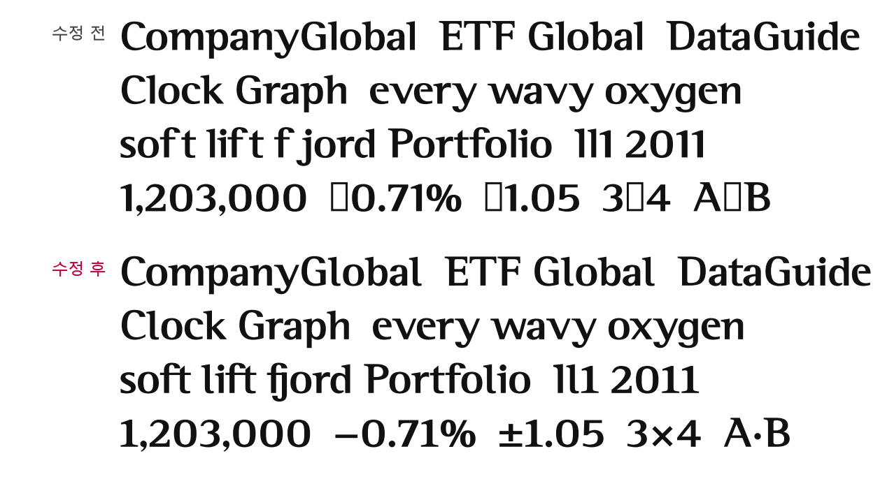
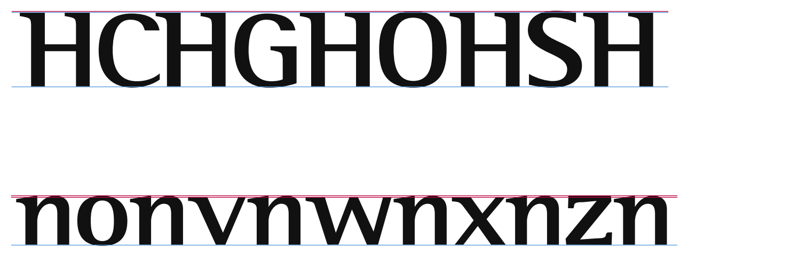
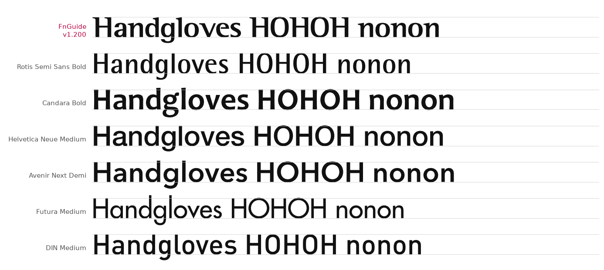
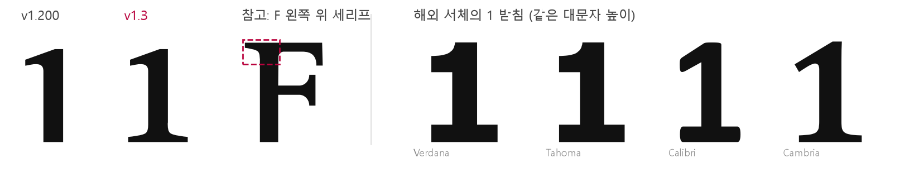
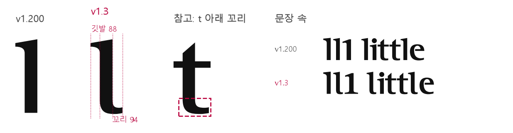
서체 사양
| 서체명 | FnGuide Logotype Regular (v1.31) |
|---|---|
| 수록 글자 | 114자: 영문 대문자 26 · 소문자 26 · 숫자 10 · 특수문자(키보드 입력 문자 32종 + – ‘ ’ “ ”) · 금융 기호 5(₩ − ± × ·) · f 합자 10 |
| 숫자 | 표에서 자리를 맞추려면 '고정폭 숫자' 기능을 켜세요. |
| 합자 | fi fl ff ffi ffl fb fh fk ft fj. 입력하면 자동으로 이어진 글자로 바뀜 |
| 규격 | 1000 UPM · 대문자 높이 700 · x-height 498 (디자이너용) |
사용 방법
- 디자인 툴(Figma, Illustrator 등)에는 OTF, 오피스(Word, PowerPoint)에는 TTF를 설치합니다.
- PowerPoint·Word에서는 [글꼴] 설정의 "글꼴 커닝"을 켜야 로고와 같은 간격이 됩니다.
- 합자(fi, fl 등)는 대부분의 디자인 툴과 웹 브라우저에서 자동으로 적용됩니다.
- 제목·브랜드 문구 전용이며 한글은 들어 있지 않습니다.
/* 웹 적용 (사내 서비스) */
@font-face {
font-family: "FnGuide Logotype";
src: url("<사내 CDN 경로>/FnGuideLogotype-Regular.woff")
format("woff");
font-display: block;
}
.brand { font-family: "FnGuide Logotype", serif; font-kerning: normal; }서체 파일 받기
사내에서만 쓸 수 있습니다. 외부로 보내거나 공개된 곳에 올리지 마세요. 외부 제작물에 필요하면 웹&모바일팀 디자인 파트에 요청하세요.
v1.31 · 대문자–숫자 간격
2026.10.29
FY2025·Q4처럼 대문자 옆에 숫자가 오면 그 자리만 벌어져 보였습니다. 대문자와 숫자 사이 519쌍에 간격 보정을 넣어 고르게 맞췄습니다.
- 기본: 중간 리듬
- 대문자끼리(−55 조임)와 숫자끼리(조임 없음)의 중간으로, 대문자–숫자 쌍을 모두 25 조였습니다.
- 모양에 따라 더 조임
- T4·7A·Y4·V4처럼 사이에 빈 공간이 큰 쌍은 기존 간격 계산 방식으로 더 조였습니다(최대 90). 해외 서체 12종 중 이 쌍들을 조이는 Inter와 같은 방향이며, 고친 쌍끼리 닿는 곳은 없습니다.
- 그대로인 것
- 글자 모양, 숫자가 없는 로고타입. 고정폭 숫자 기능을 켜면 이 간격 보정은 적용되지 않습니다.
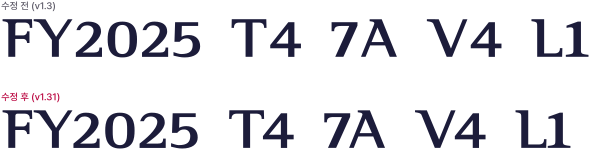
v1.3 · 디자인 크리틱 반영
2026.10.29 · 근거: 1차 디자인 크리틱 · 개선안 보고서 (새 창)
| 항목 | 달라지는 점 |
|---|---|
| C·G 높이 | 대문자 C·G가 O와 같은 높이로 보입니다 |
| v·w·x·y 높이 | v·w·x·y가 다른 소문자와 같은 높이로 보입니다 |
| o·c·e 위쪽 | 둥근 소문자가 작아 보이지 않습니다 |
| f 다음 간격 | soft·lift의 f와 t 사이 구멍이 사라집니다 |
| 파일 설정 | Windows에서 글자 위끝이 잘리지 않습니다 |
| 1 · I · l 구분 | Il1을 헷갈리지 않습니다 |
| 숫자 · 기호 | − ± × ·를 쓸 수 있고, 표의 숫자 자리를 맞출 수 있습니다 |
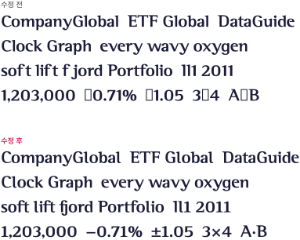
로고타입 17종을 v1.3으로 다시 만들었습니다. C·G·e·o·c 높이가 바뀐 글자가 들어간 로고는 아주 조금, l이 들어간 CompanyGlobal·ETF Global은 눈에 띄게 바뀝니다.
글자 높이 맞춤
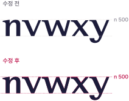
ft · fj 합자
숫자 1 · 소문자 l 구분
v1.200에서는 대문자 I, 소문자 l, 숫자 1이 모두 깃발만 있는 막대라 "Il1"이 "111"처럼 읽혔습니다. 1에는 받침을, l에는 꼬리를 붙여 셋을 구분했습니다. 대문자 I는 그대로입니다. 두 글자 모두 새 모양을 만들지 않고 이 서체 안의 다른 글자에서 가져와, 서체 전체의 인상을 지켰습니다.
숫자 1, F의 세리프로 만든 받침
위 깃발은 그대로 두고, F의 왼쪽 위 세리프를 위아래로 뒤집어 기둥 양쪽에 같은 모양으로 붙였습니다. 받침 너비는 1에 받침이 있는 해외 서체(Verdana·Tahoma·Calibri·Cambria·Times·Palatino·Book Antiqua)의 비율에 맞춰 420으로 정했습니다. 해외 서체는 받침이 기둥 굵기의 약 2.7배, 숫자 0 너비의 약 0.8배입니다.
소문자 l, t의 꼬리로 만든 꼬리
위 깃발은 그대로 두고, t의 아래 꼬리를 가져와 끝으로 갈수록 얇아지게 붙였습니다. 위 깃발이 기둥 왼쪽으로 88 나가므로, 꼬리도 기둥 오른쪽으로 비슷하게 나가야 위아래가 대각선으로 균형을 이룹니다. 끝이 얇아 실제보다 짧아 보이는 만큼 6을 더해 94로 정했습니다.
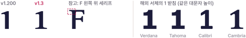
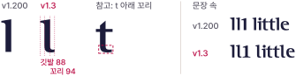
고정폭 숫자 · 금융 기호
기본 숫자는 지금처럼 글자마다 폭이 다릅니다. 표에서는 고정폭 숫자 기능을 켜면 자리가 맞습니다. 웹은 font-variant-numeric: tabular-nums 한 줄로 켭니다.
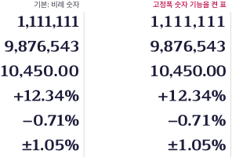
버전 이력
최신 버전이 위에 옵니다.
- v1.31대문자–숫자 간격대문자와 숫자 사이 519쌍의 간격 보정 추가(빈 공간이 큰 T4·7A·Y4 등은 더 조임). 글자 모양은 v1.3과 같음
- v1.3디자인 크리틱 반영C·G·v·w·x·y·o·c·e 높이 정렬, ft·fj 합자, 숫자 1 받침·소문자 l 꼬리, 금융 기호 − ± × ·, 고정폭 숫자, 파일 설정 보정
- v1.200글자 디자인 수정f m M s S y r 새 디자인, f 합자 8종 다시 제작, I·f·m·r 기둥 4% 가늘게
- v1.100대문자 리듬B2C API 로고를 참고해 대문자끼리의 간격을 로고 밀도에 맞춤
- v1.000최종 커닝·합자글자 간격 보정 강도 최종 조정, f 합자 8종 추가
- v0.700구조 점검11개 구조 요소 점검, K k M N S U X f r w z 보정
- v0.600자동 커닝글자 묶음 정의, 전체 글자 쌍 간격 자동 보정
- v0.500스페이싱FnGuide 로고 간격으로 글자 양옆 여백 기준 보정
- v0.300–0.430글자 확장숫자·특수문자 추가, 디자인팀 수정안 반영
- v0.100–0.200초기 제작로고 22자로 폰트 생성, 대소문자 52자로 확장
Design Critic
서체가 새 버전이 될 때마다 전문가 관점으로 디자인 크리틱을 진행합니다.
- 디자인&크리틱
- 웹&모바일팀 디자인 파트, 서체 관리자
- 최근 회차
- 1차 · v1.200 · 2026.10.27 · v1.3에 반영
1차 · v1.200 크리틱
2026.10.27 · 보고서 전체 보기 (새 창)
기본 비례와 굵기 균형은 같은 계열의 해외 서체(Rotis Semi Sans·Optima 계열)와 같은 수준입니다. 높이 정렬·f 주변 간격·혼동 글자처럼 사람이 손으로 다듬는 마지막 단계가 남아 있습니다.
- 5건수정 필요높이 정렬 3, f 간격 1, 파일 설정 1
- 6건개선 권장숫자 1, 얇은 가로획, 대각선 간격, 숫자·기호, woff2, 사용 규칙
- 5건유지비례, 기둥 굵기, 깃발 세리프, 굵기 차이 성격, 폭 비례
전문가 총평
- 타이포그래픽 디자이너
- 장르 안의 비례는 교과서 범위입니다(소문자 높이 0.69, 기둥 비율 0.93). 남은 것은 높이 정렬·f 간격·혼동 글자 같은 마무리 손질입니다.
- CI/BI 그래픽디자이너
- 흔한 산세리프와 바로 구별되는 개성이 있습니다. 깃발 세리프와 굵기 차이라는 정체성은 지키며 고쳐야 합니다.
- 웹 디자이너
- 로고·제목(16px 이상)용으로 좋습니다. 본문·표에 쓰려면 고정폭 숫자, ₩ 같은 기호, 최소 크기 규칙이 먼저 필요합니다.
결론과 개선안
| 등급 | 무엇을 |
|---|---|
| 수정 필요 | ① C·G 윗부분을 O 수준(약 711)으로 올림 |
| 수정 필요 | ② v·w·x·y 를 소문자 높이에 맞춤 |
| 수정 필요 | ③ o·c·e 위쪽에 넘침 주기 |
| 수정 필요 | ④ ft·fj 이어 쓰기 글자 추가, +보정(ft·fj·ty·rv) 재검토 |
| 수정 필요 | ⑤ 파일 설정: Windows 위쪽 높이 값 850 → 870 이상, Regular 표시 |
| 개선 권장 | ⑥ 숫자 1 을 I·l 과 구분되게 |
| 개선 권장 | ⑦ o·e·c·a 위쪽 가로획을 조금 두껍게 |
| 개선 권장 | ⑧ LY·LV 등 대각선 쌍 간격을 눈으로 조정 |
| 개선 권장 | ⑨ 고정폭 숫자와 금융 기호(₩ · — … × °) 추가 |
| 개선 권장 | ⑩ woff2 파일 추가 |
| 개선 권장 | ⑪ 사용 규칙에 최소 크기와 한글 짝 서체 명시 |
| 유지 | 소문자 높이 비율, 기둥 굵기 비율, 깃발 세리프, 굵기 차이 성격, O/H 폭 비례 |
주요 근거
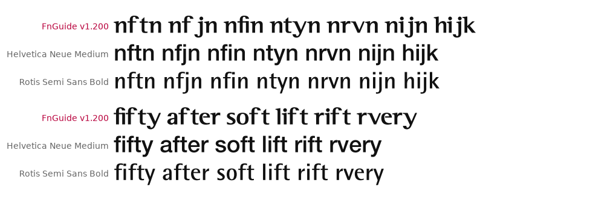
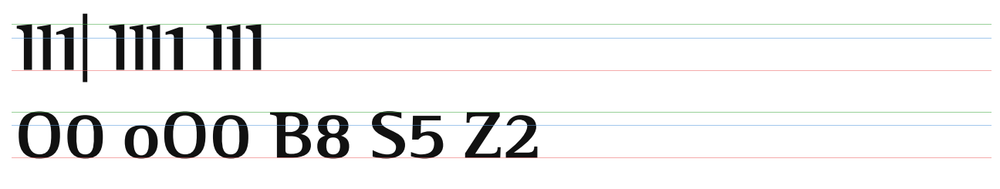
전문가 3인은 AI가 각 분야의 관점을 나눠 맡아 쓴 것으로, 실제 디자이너의 검수를 대신하지 않습니다. 모든 의견은 서체 파일을 직접 잰 수치와 비교 그림을 근거로 했습니다.
Assets Download
로고를 SVG와 PNG로 받습니다. 흰색 버전은 그룹 컬러나 어두운 배경 위에 씁니다.
- SVG
- 크기를 바꿔도 깨지지 않는 그림
- PNG
- 투명 배경 이미지, 원본의 4배 크기
- 서체 파일
- 서체 소개 맨 아래에서 받습니다
사내 전용. 외부에 전달하지 말고, 협력사 제작물에 필요하면 웹&모바일팀 디자인 파트를 통해 요청하세요.
Design Article
서비스를 고르면 파비콘·아이콘·오픈 그래프를 로고타입으로 바로 만들 수 있습니다.
- 파비콘
- 브라우저 탭의 작은 그림
- 오픈 그래프
- 링크를 공유할 때 뜨는 미리보기 그림
아이콘
16 · 24 · 32 · 64 · 128 · 256px 실제 크기. 파비콘(favicon.ico)에는 16 · 32 · 48px, 아이콘(icon.ico)에는 16 · 24 · 32 · 48 · 64 · 128 · 256 · 512px이 함께 들어 있습니다.
애플 터치 아이콘
180 × 180px · 아이폰·아이패드 홈 화면에 추가할 때 보이는 아이콘. 채널톡 아이콘 사이즈와 동일합니다.
오픈 그래프
1200 × 630px · 카카오톡·슬랙·메신저에 링크를 붙이면 뜨는 그림
한 번에 받기
파비콘(ico·svg) · 아이폰 180 · 안드로이드 192·512 · 아이콘 7종 · 오픈 그래프 · 웹페이지에 붙일 코드
웹페이지의 <head> 안에 붙일 코드
받은 파일을 사이트 맨 위 폴더에 올린 경우입니다.
Usage Rules
서체와 로고는 사내 브랜드 자산으로, 정해진 범위 안에서만 사용합니다.
- 문의
- 웹&모바일팀 디자인 파트
기본 원칙
- 로고 자리에는 원본 파일
- 로고가 들어갈 자리에는 서체로 입력하지 말고 로고 파일을 넣으세요. 서체는 제목·문구·그래픽용입니다.
- 제목·브랜드 문구 전용
- 간격이 로고 기준으로 조여져 있어 작은 크기의 본문에는 적합하지 않습니다. 작은 글자에 꼭 써야 한다면 글자 사이를 조금 넓혀 쓰세요.
- 사내 사용만 허용
- 폰트 파일을 외부에 전달하거나 외부 서버·공개 저장소에 올리지 않습니다.
- 영문·숫자·기호만 수록
- 한글은 들어 있지 않습니다.
배경 조합
흰 바탕과의 명도 대비가 4.5 이상이면 작은 글자에도 쓸 수 있습니다. 그보다 낮으면 큰 제목이나 그래픽에만 쓰세요.
협력사 제작물
협력사 제작물에 로고나 서체가 필요하면 파일을 직접 전달하지 말고 웹&모바일팀 디자인 파트를 통해 요청합니다.
로고 여백 · 최소 크기 · 금지 예시
브랜드 매뉴얼(BI별 톤·컬러·서체 규정)이 확정되면 이 자리에 추가됩니다.